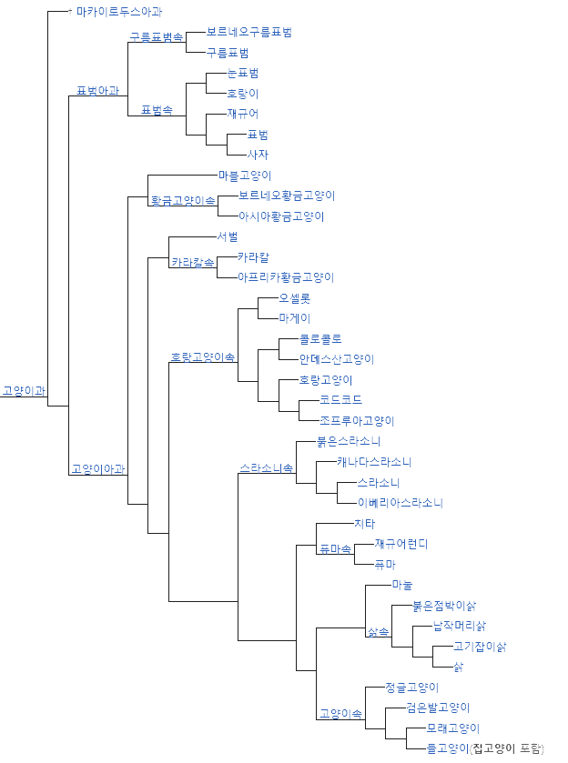

고양이의 정의
고양이는 식육목 고양이과에 속하는 포유류 동물이다. 일반적으로 "고양이"라 함은 인간에게 길들여진 집고양이(house cat 또는 domestic cat)를 말한다. 들고양이(wild cat)는 약 10만 년에서 7만 년 전부터 존재했다. 2007년 기준으로 최근의 연구에 따르면 길들여진 고양이의 기원은 약 1만 년 전 근동지방에서 스스로 숲 속을 나와 사람들이 모여사는 마을에 대담하게 정착하여 길들여진 5마리 정도의 아프리카들고양이(Felis silvestris lybica)로 추측된다.고양이는 인류로부터 오랫동안 반려동물로 사랑받아 왔다. 실례로 고대 이집트의 벽화에는 고양이를 새 사냥에 이용하는 그림이 있다. 동아시아의 십이지에는 포함되어 있지 않지만, 타이와 베트남에서는 토끼 대신 고양이가 십이지 중 하나이다. 스핑크스처럼 털이 거의 없거나 맹크스처럼 꼬리가 없는 품종도 있다. 품종은 장모종, 중모종, 단모종으로 나뉘며. 단모종의 대표종은 아비니시안 고양이, 장모종의 대표종은 페르시안 고양이가 있다. 애완견과는 달리, 옛 습성이 살아 있고 발톱을 숨길 수 있어서 쥐나 작은 새를 사냥할 수 있다.
생물학적 특징
● 골격
고양이는 거의 모든 포유류와 같이 7개의 경추를 가지고 있으며, 13개의 흉추, 7개의 요추, 3개의 천추를 가지며 맹크스를 제외하고는 22개나 23개의 미추를 가진다. 여분의 요추와 천추 덕분에 고양이는 사람과 비교했을 때, 보다 향상된 척추 운동성과 유연성을 가진다. 미추는 꼬리를 형성하며, 고양이의 빠른 운동시에 몸의 균형을 잡는 데 이용된다. 또한 고양이는 자유롭게 움직이는 쇄골을 가지고 있어서 어떠한 공간이라도 머리만 들어간다면 몸이 지나갈 수 있다.
● 입
고양이는 사냥감을 죽이고 고기를 찢기에 좋은 아주 특수한 이빨을 가지고 있다. 앞어금니와 첫 번째 어금니는 육식용으로 입 양쪽에 쌍을 이루고 있으며, 한 쌍이 가위와 같이 고기를 효율적으로 자를 수 있는 기능을 한다. 고양이의 어금니를 다른 말로 열육치라고 부른다. 이러한 것은 다른 야수들에게도 존재하지만, 특히 고양이과의 동물들에게 잘 발달되어 있다. 보통 고양이는 이빨로 음식을 씹는다기보다는 음식을 잘라서 먹는다고 볼 수 있다.
구강 구조에 의하여 고양이들은 야옹거리기, 골골거리기, 하악 거리기, 으르렁거리기, 빽빽거리기, 짹짹거리기, 찰칵 소리 내기, 끙끙거리기 등의 다양한 발성과 몸짓으로 의사소통을 한다. 특히 야옹거리는 소리가 때에 따라 다르기 때문에 알아듣기 어려울 수 있다.
● 귀
각 귀에 있는 32개의 개별 근육들은 고양이가 각각의 귀를 별도로 움직여 소리를 들을 수 있도록 해준다. 이러한 운동성 덕분에 고양이는 몸을 한 방향으로 움직이면서 귀를 다른 방향으로 향하게 할 수 있다. 대부분의 고양이들은 위로 향하는 곧은 귀를 가지고 있다. 개와 달리, 접힌 귀를 가진 종은 극히 드물다. 스코티시 폴드가 그러한 예외적인 변종이다.
화가 났을 때나 무서울 때, 고양이는 으르렁거리거나 하악거리는 소리를 내며 귀를 뒤로 젖힌다. 또한 고양이는 놀거나 뒤에서 나는 소리를 들을 때 귀를 뒤로 젖힌다. 귀의 각도는 고양이 감정을 이해하는 중요한 단서이다.
● 발
개와 마찬가지로 고양이는 발가락으로 걷는 지행동물이다. 고양이는 발의 뼈가 다리의 아래 부분이 되며, 직접 발가락으로 걷는다. 고양이는 뒷발을 거의 정확하게 상응하는 앞발의 발자국에 놓음으로써 소음과 흔적을 최소화 한다. 이것은 또한 고양이들이 거친 지역을 돌아 다닐 때 뒷발에 확실한 발판을 제공하는 역할을 한다. 고양이과 동물들의 특성으로, 오므릴 수 있는 발톱을 가지고 있다. 보통의 긴장이 풀린 상태에서 발톱은 발바닥 근처의 피부와 털로 덮여 있어 발톱이 지면과의 접촉으로 인하여 닳는 것을 방지하여 발톱을 날카롭게 유지하며 또한 사냥감을 조용히 따라갈 수 있게 한다. 앞발의 발톱은 일반적으로 뒷발톱 보다 날카롭다. 고양이는 의도적으로 하나 이상의 발의 발톱을 꺼낼 수 있다. 고양이는 사냥이나 자기방어, 타고 오르기, 주무르기 혹은 침구류나 두꺼운 러그 등의 부드러운 표면에 추가 마찰을 위하여 발톱을 꺼낼 수 있다. 온순한 고양이의 발 위 아래를 조심스럽게 누름으로써 발톱을 꺼낼 수도 있다. 굽어 있는 고양이의 발톱은 카펫나 다른 두꺼운 천 등에 걸리기도 하며, 스스로 빼낼 수 없을 경우 고양이를 다치게 할 수도 있다. 일반적으로 앞발에 다섯 개, 뒷발에 네 개나 다섯 개의 발톱을 가지고 있으나 오랜 돌연변이의 결과로 집고양이들은 다지증에 걸리기 쉬우며 여섯 개나 일곱 개의 발가락을 가지고 있을 수도 있다. 다섯 번째의 앞발톱은 다른 발톱에 인접하여 있으며, 좀 더 인접하여 여섯 번째의 손가락인 돌출부가 있다. 발목 안쪽에 위치한 앞발의 이러한 특수한 모양은 손목관절의 패드로 큰 고양이들이나 개들의 발에서도 발견된다. 이것은 보통 걸음걸이에는 기능하지 않으나 도약할 때 미끄러지지 않도록 해주는 기능을 한다고 믿어지고 있다.
● 피부
고양이는 다소 느슨한 피부를 가지고 있으며, 이것은 고양이가 포식자나 다른 고양이와 싸울 때 그들에게 잡히더라도 몸을 돌려서 마주볼 수 있도록 해준다. 이것은 또한 수의학적으로도 주사를 쉽게 놓게 하는 이점이 있다. 실제로, 신부전증이 있는 고양이들의 생명은 때때로 투석치료 대신 정기적으로 다량의 약을 피부에 주사함으로써 몇 년씩 연장되기도 한다.
목뒤의 특히 느슨한 피부는 뒷덜미이며, 어미 고양이가 새끼를 운반 할 때 새끼를 잡는 부위이다. 따라서, 고양이들은 그 부위를 잡혔을 때 조용해지고 순종적으로 되는 경향이 있다. 이러한 행동은 다 자라서도 이어져, 수컷이 교미를 위하여 암컷에 올라 탔을 때 뒷덜미를 잡음으로써 암컷을 움직이지 못하게 하며 교미 중 암컷이 도망가지 못하도록 한다.
이 방법은 비협조적인 고양이를 치료하거나 옮기려고 시도할 때 유용할 수 있다. 그러나 성체는 아기 고양이보다 무거워서 절대로 뒷덜미를 사용하여 옮기면 안되며 엉덩이와 뒷다리 쪽 그리고 가슴과 앞발 쪽으로 무게를 지탱해야 한다. 어린 아기와 마찬가지로 고양이는 머리와 앞발을 사람의 어깨에 올리고 뒷발과 엉덩이를 사람의 팔로 떠받치며 안기게 된다.
● 감각
고양이의 후각은 매우 민감하다.
고양이의 감각은 사냥에 맞추어져 있다. 고양이는 고도로 발달된 청각, 시각, 미각 그리고 촉각이 있어 다른 포유류들보다 극도로 예민하다.
고양이의 야간 시력은 사람보다 우수하나 낮 시간의 시력은 사람보다 열악하다. 고양이의 눈에는 휘막이 있으며, 푸른 눈은 일반적으로 멜라닌 색소가 부족하여 적목현상을 보일 수 있다.
사람과 고양이는 저음대에서는 비슷한 청음구간을 보이나 고음대에서는 64kHz까지의 음을 들을 수 있으며 후각은 사람보다 약 열네 배가 강하다.
초기 고양이 조상들의 돌연변이로 인하여 고양이는 단맛을 느끼는 데 필요한 두 개의 유전자 중 하나를 잃었다. 이동과 지각을 돕기 위해, 고양이는 십여 개의 움직일 수 있는 수염을 얼굴 부위에 가지고 있다.
● 물질대사
고양이의 수면시간은 매우 길다.
고양이는, 나이가 들어감에 따라, 다른 동물들 보다 더 많이 잠으로써 에너지를 보존한다. 하루 수면시간은 다양하나 주로 12~16시간이며 평균 13~14시간이다. 어떤 고양이들은 24시간 중 20시간을 자는 경우도 있다. 고양이잠이라는 용어는 고양이의 짧은 시간 동안 가볍게 자는 능력을 말한다.
야행성으로 인해 고양이는 저녁부터 새벽까지의 시간대에 더 활동적이며 놀기를 좋아한다.
고양이의 성질은 종과 사회화에 따라 달라진다. 오리엔탈 타입은 더 가늘고 더 활동적이며, 코비 타입은 더 무겁고 덜 활동적인 경향이 있다.
정상적인 고양이의 체온은 38℃에서 39℃이다. 체온이 39.5℃ 이상이면 고온이며, 37.5℃ 이하이면 저체온으로 인정된다. 집고양이의 정상 심장 박동수는 분당 140에서 220이며 고양이가 얼마나 흥분되었나에 따라 크게 달라진다. 쉬고 있는 고양이는 평균 심박동수는 150에서 180bpm으로 인간 평균 80bpm의 약 두 배이다.
● 먹이와 식이
어미 고양이가 어린 고양이에게 젖을 먹이고 있다.
고양이용 우유로 어린 고양이를 먹이고 있다.
고양이는 곤충, 새, 설치류와 같은 작은 동물을 먹는다. 도둑고양이나 자율급식을 하는 집고양이는 하루에 8번에서 16번 식사를 한다. 그럼에도 불구하고 성묘의 경우 하루에 한번 급식에 적응할 수 있다. 고양이는 전형적인 육식동물로 생리작용이 고기를 소화시키는 데 최적화되어 있으며, 식물을 소화시키는 능력은 제한적이다.
고양이는 타우린과 아르기닌(필수 아미노산 중 하나)들을 스스로 생성하지 못하기 때문에 살코기로부터 얻어야 한다. 따라서 고양이는 생존하기 위해서 반드시 고기를 먹어야 한다. 고양이의 이빨과 마찬가지로 소화관도 육식에 최적화되어 있으며 길이가 짧은 고양이의 장은 고기에서 얻어지는 단백질과 지방을 최대한 빨리 분해할 수 있다. 이러한 특징은 특정한 지방산뿐 아니라 식물성 음식을 흡수하거나 소화하거나 대사시키는 데 있어 제한요인이 된다. 예를 들면 타우린은 식물에는 희귀하고 고기에는 풍부하다. 이것은 고양이 눈의 건강을 유지하는데 중요한 아미노산이다. 타우린 결핍은 고양이의 망막에 서서히 퇴화를 가져와 갑자기 돌이킬 수 없는 맹시를 만드는 황반변성을 일으킬 수 있으며, 혈액 응고, 면역기능약화를 초래한다. 아르기닌 역시 아미노산의 일종이며 육류, 어류, 유제품, 견과류 등에서 얻을 수 있다. 아르기닌이 고양이에게 부족할 경우 구토, 침 흘림, 운동 실조, 떨림 등의 증상이 나타난다.
고양이가 사냥한 것으로 보이는 집쥐를 물고 간다.
육식 중심의 생리에도 불구하고, 고양이는 작은 양의 풀, 잎, 관목, 화초, 여러 다른 식물을 같이 섭취한다. 이러한 고양이의 행동에 대해 소화가 안 될 때 역류시키기 위한 것이라는 설과, 섬유소나 미네랄을 섭취하기 위한 것이라는 설이 있다.
백합의 잎은 고양이에게 항구적이고 생명에 위협을 줄 수 있는 신장의 손상을 유발하고, 그 외에도 고양이에게 독성이 있는 식물이 있다. 캣 팬시어 협회는 고양이에게 위험한 식물 목록을 제공하고 있다.
아보카도 또한 독성이 있으나, 열매는 아보덤 고양이 사료에도 있다. 그러나 ASPCA는 이것이 아보카도가 어떻게 작용하는지 자세히 알기 전까지는 안전한지에 대해서 이야기할 수 없다고 선언한 바 있다.
몇몇 식물성 성분이 많은 고양이 사료에서 영양학적으로 부족함을 보충하기 위해 화학적으로 조성한 타우린과 여러 영양성분을 공급하기도 한다.
고양이는 선택적인 식성을 가지고 있다. (앞서 언급한 바와 같이 이 고양이과들은 단맛을 느끼는 능력을 잃어버렸다.) 그러나 고양이는 일반적으로 간손상의 위험없이 36시간 이상의 공복을 견딜수 없다. 고양이는 자신의 후각신경을 자극하는 캣닙(=개박하) 나 마타타비(=개다래)를 매우 좋아한다. 많은 고양이가 캣닢이나 마타타비를 매우 좋아하고 그위에서 구르고, 가지고 놀고, 때때로 씹기까지 한다. 침을 흘리며 마약에 취한 듯한 모습을 보이는 개체에서부터 전혀 관심이 없는 개체까지 개체별 차이가 있다.
● 독에 대한 민감성
고양이의 간은 사람이나 개와 같은 다른 동물에 비해 해독력이 떨어지는 편이다. 그래서 가정에서 안전하다고 생각되며 많이 노출되는 물질도 고양이에게는 위험할 수 있다. 또한 환경오염에도 더 민감하다고 알려져 있다. 어떤 명백한 이유없이 고양이가 갑자기 혹은 지속적인 병에 걸렸을 때에는 독에 노출되었다고 볼 수 있다.
예를 들면 일반적인 진통제인 파라세타몰(파나돌)이나 아세트아미노펜(타이레놀)은 고양이에게 매우 독성이 강하다. 왜냐하면 고양이에게는 그러한 물질을 해독할 만한 효소가 원래 없기 때문에 사람에게는 안전한 분량이라도 고양이에게는 치명적일 수 있다. 심지어 고양이의 관절염에 쓰이는 아스피린조차도 사람에 비해 더 강한 독성으로 작용하기 때문에 용량을 잘 조절해서 써야 한다. 또한 발모제로 많이 쓰이는 미녹시딜 등을 고양이 털이 빠진 환부에 발라주었다가 고양이가 핥아서 때때로 치명적일 수 있다.
또한 집에서 많이 쓰이고 고양이 주위에 놓일 수 있는 좀약이나 나프탈렌 제제를 포함하여 살서제, 살충제, 제초제 등도 고양이에게 위험하다. 고양이 주변에 놓일 수 있는 페놀 기반의 상품을 예로 들면, 파인솔, 데톨, 헥사클로로펜과 같은 세정제 종류도 고양이에게 치명적일 수 있다. 부동액으로 쓰이는 에틸렌 글리콜은 고양이가 잘 먹을 수 있는데, 한숟갈 분량만 먹어도 치명적이다. 에센셜 오일도 고양이에게 독성을 나타내는데, 티트리 오일이나 티트리 오일 베이스의 화장품, 샴푸로 인해 심각한 질환을 앓은 고양이의 경우도 보고되었다. 일반적으로 고양이에게 가장 많이 중독을 일으키는 것은 살서제나 부동액이다.
사람이 먹는 음식도 고양이에게 독성을 띨 수 있는데, 예를 들어 고양이가 초콜릿을 먹으면 테오브로민 중독을 일으킬 수 있다. 많은 양의 양파나 마늘도 고양이에게 독성을 띤다고 한다. 많은 관상용 화초가 여러 동물들에게 독성이 있고 고양이도 예외는 아니다. 이러한 것들은 고양이가 미치지 못하는 곳에 두어야 한다. 예를 들면 백합은 고양이에게 치명적인 신장 손상을 일으킬 수 있으며, 필로덴드론속 식물 또한 고양이에게 독성이 있다.
습성
● 사회성
무리 생활을 하지는 않지만 자신보다 높은 서열의 고양이의 식사 순서를 지키는 등 서열 의식이 갖춰져 있다. 고양이 울음소리의 사회적 역할은 침입자에 대한 것과 나머지 세 가지 소리의 종류에 따라 다르다. 코로 내는 가르랑 소리는 고양이 간의 인사 혹은 다치거나 아픈 고양이에 대한 사회적 관심을 표현하는 것이다. 또한 비음을 섞은 떨림 소리는 인사를 위한 것이다. 천천히 다가오며 『야옹』과 같이 입을 열며 내는 울음소리는 종류가 많은데, 주로 다른 고양이나, 개와 인간같은 다른 동물과의 인사내지 사회적 상호작용을 위한 상황에서 내는 것이다. 입을 열면서 내는 소리, 『하-악』이나 으르렁거림은 주로 고양이의 공격성과 관련된다. 사람, 가축, 다른 반려동물과의 가까운 곳에서의 생활은 고양이가 점차로 공생을 할 수 있는 사회적 적응이 되게 하였으며, 그럼으로써 사람이나 다른 동물에게 애정표현을 잘 하게 되었던 것 같다. 동물행동학에서는 고양이를 키우고 있는 사람은 고양이에게 마치 어미와 같은 역할을 하게 된다고 한다. 또한 집에서 자란 어른 고양이는 마치 새끼고양이 시절의 연장인 것처럼 행동한다. 이것을 행동적 유형성숙이라고 한다. 집고양이가 배고픈 어린아이의 우는 소리를 모방해서 먹이를 달라고 높은 소리로 조르면, 특히나 사람에게는 거부하기가 힘들다.
● 싸움
집고양이의 경우 암컷보다는 수컷이 더 자주 싸운다. 길고양이의 경우에는 한마리의 암컷을 두고 두마리의 수컷이 싸우는 경우가 많다. 이런경우 대개는 더 무거운 고양이가 승리하게 마련이다. 집고양이의 또 다른 싸움의 원인으로는 좁은 집에서 같이 살아서 자신의 영역을 만들기가 어려울 때이다. 암컷 고양이또한 영역을 지키거나 새끼를 지키기 위해 싸운다. 중성화는 이러한 싸움을 줄이거나 심지어 없앤다. 아마도 그 원인은 성호르몬에 있는 것으로 보인다.
● 사냥과 먹이
고양이는 작은 동물 즉, 새나 설치류를 사냥하며, 사람들은 해충을 없애기 위해 자주 고양이를 이용한다. 미국에서는 약 8000만에 이르는 집사 없는 길고양이에 의해 연간 14억~37억 마리의 새와 69억~207억 마리의 포유류가 목숨을 잃는 것으로 알려져 있다.
● 번식
암컷 고양이는 하나의 자궁을 가지고 있으며 연간 발정을 자주하는 편이다. 초봄에서 늦가을 사이에 발정을 한다. 발정은 2주에 한번 주기로 약 4일에서 7일간 한다. 또한 임신 중에 발정이 나는 경우도 종종 있는 일이다. 한번에 많게는 6마리, 적게는 한두마리의 새끼를 낳는다.
● 위생
고양이의 혀에는 목구멍쪽을 향해 고리처럼 뻗은 케라틴을 함유한 유두돌기가 있다. 고양이는 이 케라틴 돌기와 침으로 털을 핥아 스스로를 단장한다. 또한 많은 고양이들은 다른 고양이나 사람을 단장해 주기도 하는데 고양이들은 종종 집단의 서열 상에서 우위에 있음을 주장하기 위해 다른 고양이를 핥아 단장해 주기도 한다. 어떤 고양이들은 때때로 이러한 몸단장으로 인하여 위장에 쌓인 털 뭉치를 토해내기도 한다. 이러한 헤어볼은 특정 고양이 사료나 털제거를 돕는 약, 그리고 빗이나 솔로 주기적으로 빗질을 해줌으로써 예방될 수 있다. 그러나 일각에선 헤어볼 사료에 첨가된 식이섬유가 수분을 흡수해서 고양이의 수분 섭취량을 줄여 장기적인이고 점진적인 신장 손상의 원인이 될 수 있다고 주장하기도 한다.
● 높은 곳을 좋아하는 습성
고양이들은 다른고양이과 동물들처럼 높은 곳을 좋아하는 습성이 있는데, 그 습성 때문에 물건을 떨어트리는 사고를 가끔씩 일으킨다. 그래서 고양이의 습성에 알맞은 장난감은 캣 타워이다.
고양이의 생활
암고양이는 주기적으로 발정을 하는데, 만일 발정할 동안에 교미를 하지 못하면 다음 발정은 더 빨리 오게 된다. 대체로 이 같은 발정은 암고양이가 임신을 하기 전까지 계속된다. 발정은 1년에 몇 번 있으며 3~15일간 계속된다. 임신 기간은 약 9주일이며, 한배에 3-5마리의 새끼를 낳는다. 갓태어난 새끼의 몸무게는 보통 약 100g이다. 어미는 새끼들을 핥아 새끼의 몸을 말리고 호흡과 다른 생체 기능을 자극한다. 건강한 새끼 고양이는 태어난 지 10~14일이면 눈을 뜨고 이어 귀가 들리게 되며, 첫 이빨이 난다. 약 3주 정도면 걷게 되고, 주위를 눈여겨보며 환경에 익숙해진다. 4주면 모든 이가 나고 6주 정도면 완전하게 성숙하여 어미의 보살핌 없이 혼자 살아가게 된다. 고양이는 소리·몸짓·냄새 등을 통한 다양한 방법으로 고양이끼리, 또는 다른 동물이나 사람과 의사 소통을 할 수 있다. 고양이는 앞 이마와 입 주변이나 꼬리의 밑동 가까이에 냄새샘이 있다. 이 샘을 이용해 사람이나 물건에 고양이의 냄새를 묻히는데, 이 냄새는 고양이와 몇몇 다른 동물만이 맡을 수 있다. 수고양이는 사물에 오줌을 뿌려서 자신의 짝짓기 영역을 표시한다. 오줌 냄새는 고양이뿐만 아니라 사람도 맡을 수 있는데, 매우 지독하다. 고양이는 많은 시간에 걸쳐 보다 나은 품종을 개량하기 위해 노력한 결과 수많은 종류에 이르렀다.
계통 분류
다음은 고양이과의 계통 분류이다.
고양이의 품종
• 아메리칸 컬 • 브리티시 쇼트헤어 • 러시안블루 • 뱅갈고양이 • 메인쿤 • 랙돌 • 히말라얀 • 재패니즈 밥테일 • 오리엔탈 쇼트헤어
• 피터볼드 • 스코티시 폴드 • 스코티시 스트레이트 • 하일랜드 폴드 • 시베리안 포레스트 • 터키시 반 • 봄베이고양이 • 사바나캣
• 아비시니안 • 발리니즈 • 코리안 쇼트헤어 • 지바냥 • 버마고양이 • 코니시 렉스 • 발리니스 • 샤르트뢰 • 맹크스 • 코랏 • 버만
• 라가머핀 • 스핑크스 • 싱가푸라 • 마네키네코 • 범무늬 고양이 • 얼룩 고양이 • 삼색털 고양이 • 검은 고양이
한국의 길고양이
어떤 사람들은 국내 길고양이를 "코리안 쇼트헤어"나 줄임말인 "코숏"이라 부르기도 한다. 그러나 이는 품종명이 아니라 한국의 애묘인들이 길고양이를 일컬어 부르는 애칭이다. 고양이가 새겨진 가야 토기의 발견으로 5~6 세기에는 이미 반려동물로 기르고 있었음을 알 수 있다. 민화에도 등장하며, 조선시대 숙종에 의해 왕실에서도 길러졌다.
종류
코리안 쇼트헤어는 뚜렷하거나 일치하는 유전적인 특징이 발현되지 않는다. 버려지거나 가출한 고양이들끼리 자유로이 교미하여 태어나 러시안 블루나 시암고양이 같은 품종묘처럼 일정한 털무늬를 보이지 않는다. 현재 국내 길고양이 중 가장 많은 분포를 보이는 무늬로는 고동색 줄무늬, 아무렇게나 세가지색이 불규칙적으로 나타나는 무늬 , 노란색 줄무늬, 목·배·발·머리·꼬리등 몸의 일부를 제외한 나머지 부분이 검은색인 무늬, 검정색과 하얀색이 섞여 있는데 하얀색 비율이 더 큰 "젖소"무늬가 있다. 한국에서는 길고양이가 전체 고양이의 3분의 2정도를 차지하고 있다.
특성
길고양이는 "고양이 백혈병 [feline leukemia]", "고양이 전염성복막염 [feline infectious peritonitis]", "고양이 면역 결핍 바이러스 [Feline Immunodeficiency Virus(FIV)]"라는 세 가지 병을 앓는 경우가 있으며, 셋 다 치사율이 상당히 높은 편이다.
고양이 기르기
고양이는 전 세계 많은 사람들로부터 사랑받는 애완동물로 똑똑하고 독립성이 강하다. 또한 장난을 좋아하고, 잘 놀기도 한다. 고양이는 품종에 따라 성질이나 털 길이, 색깔 같은 신체적 특징이 다양하다. 많은 품종이 있는데, 샴·버미즈·페르시안·터키시 앙고라·러시안 블루종이 가장 인기가 있다. 고양이의 사육 시기는 생후 2~4개월 정도부터가 좋으며 새끼고양이 때부터 길을 들이면 고도의 교육도 가능하다. 고양이의 먹이는 육류와 그 내장류·물고기 등 주로 동물성 먹이가 좋으며, 쌀밥·빵 등 탄수화물을 주는 것도 좋다. 어류는 기름기를 충분히 뺀 것이 좋으며 소금기가 약간 있는 것을 쪄서 주면 좋아하지만 오징어·낙지·새우·조개류는 털이 빠지거나 두드러기 등 알레르기 질환이 생기기 쉬우므로 주지 않는 것이 좋다. 고양이와 개의 성향과 매력은 전적으로 다르다. 가령 고양이에게 훈련이란 개념은 통하지 않는다. 자신의 주인에게 충성을 다하는 개와는 달리, 고양이는 상당히 독립적인 성향을 가진 동물이기 때문이다. 거기다 고양이는 혼자서 보내는 시간을 즐기는 동물이라 구미에 맞는 장난감만 있다면 하루 종일 갖고 놀면서 시간을 보낸다.